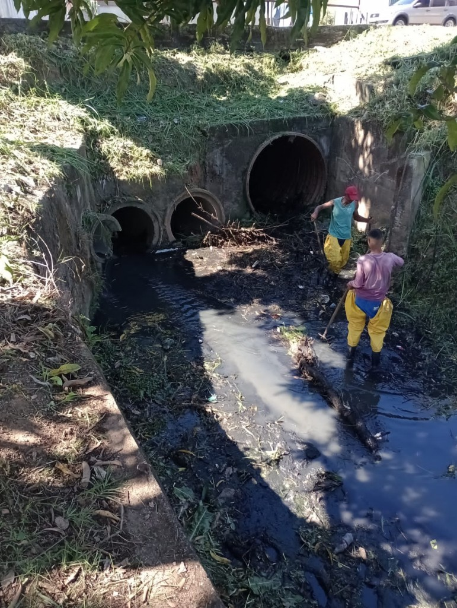

Causas, Mecanismos e Impactos

Causas
As enchentes podem ser causadas por diversos fatores, incluindo chuvas intensas, degelo rápido, obstruções nos rios, desmatamento, urbanização, sistemas de drenagem ineficientes, falhas em barragens, marés altas e tempestades costeiras, alterações climáticas e saturação do solo. Compreender essas causas é essencial para desenvolver estratégias de prevenção e mitigação, como sistemas de alerta precoce, infraestruturas de drenagem adequadas e práticas de uso sustentável do solo.

Mecanismos
Para combater enchentes, é crucial implementar uma série de estratégias eficazes. Os sistemas de alerta precoce monitoram condições meteorológicas e níveis de água, permitindo alertar a população sobre riscos iminentes. A construção e manutenção de infraestrutura de drenagem, como canais, bueiros e diques, garantem o escoamento eficiente da água. O reflorestamento aumenta a absorção de água pelo solo, enquanto o zonamento urbano evita construções em áreas propensas a inundações. Além disso, reservatórios e barragens ajudam a armazenar e controlar o fluxo de água. A educação e a preparação comunitária são essenciais para informar e preparar as pessoas sobre como agir durante enchentes. Essas medidas combinadas reduzem o impacto das enchentes, protegendo vidas e propriedades.

Impactos
As enchentes causam diversos impactos significativos. Elas podem levar à perda de vidas, destruição de propriedades, e danos à infraestrutura, incluindo estradas, pontes e edifícios. A agricultura é severamente afetada, resultando em perda de colheitas e gado. Além disso, as enchentes podem contaminar fontes de água potável, aumentando o risco de doenças. O deslocamento de comunidades e os danos econômicos também são consequências graves, exigindo grandes esforços de recuperação e reconstrução. Esses impactos evidenciam a importância de estratégias eficazes de prevenção e mitigação de enchentes.
 20.46.59_230fff2f.jpg)